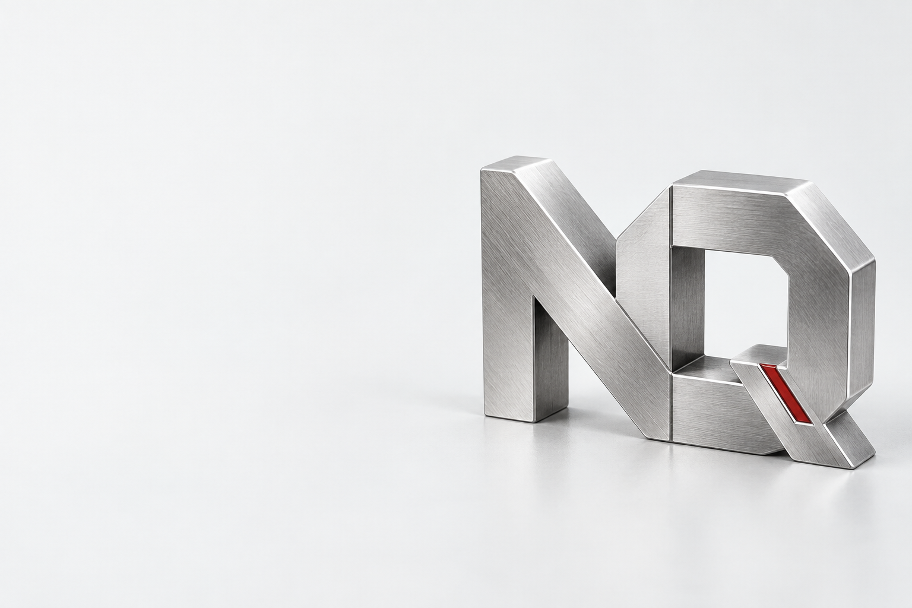
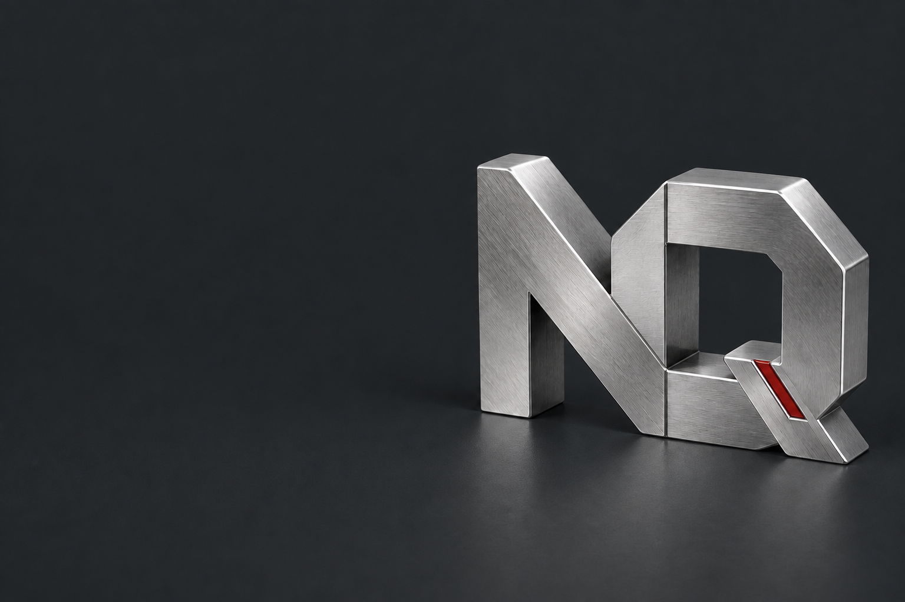

让引用，回到正确的文档。
干扰行混入率 ↓3 DOCS / 4 CASES
金融文档 RAG 评测
从检索到引用溯源，搭建可运行、可比较的金融文档评测流程。
3 份合成文档、4 个用例，top-k = 5。图示为旧基线，通过率 50%；新版另有非神经哈希检索维度对照。
- 代码
- 公开仓库
- 验证
- 单元测试 + 检索评测
- 下一步
- 扩充评测集


01 / SELECTED WORK
两个公开技术项目，一些持续生长的想法。
代码、结果，也记录尚未解决的问题。
从检索到引用溯源，搭建可运行、可比较的金融文档评测流程。
3 份合成文档、4 个用例，top-k = 5。图示为旧基线，通过率 50%；新版另有非神经哈希检索维度对照。
基于 Freqtrade 的策略代码、历史回测摘要与失败实验归档。
分窗口验证表尚未填写。历史摘要不等于独立复现或样本外验证，不作收益承诺。
LLM、Agent、评测与开源协作。将学习笔记和具体实验关联起来，独立仓库尚待建立。
从《关于南方的事》到《房间里的天气》，用音乐记录日常、城市与远方。35 首歌曲，18 项发行记录。
EXPERIENCE / FINANCIAL PROJECTS
独立负责复杂融资项目。
把产业需求、交易结构与机构决策衔接起来。
RESEARCH / STRUCTURING / EXECUTION
围绕保险资管与企业融资需求，负责主体筛选、尽职调查、方案设计、投决汇报、机构路演与交易执行。项目涵盖能源、基础设施、产业材料与商业不动产，既有成熟产品的承做，也有缺少既有路径的结构创新。
债权投资计划、信托计划、资产支持计划与股权投资计划。案例按业务类型归纳，客户及单笔金额匿名化；个人职责与项目进度分别列示。
01 / STRUCTURED FINANCE
把非标准需求转化为可论证、可决策、可执行的交易结构。
STRUCTURED TRUST
某央企工程建设龙头集团
结构创新 · 多方谈判 · 募集与投放
EQUITY INVESTMENT
某大型水电产业集团
现金流预测 · 估值分析 · 投决沟通
REVERSE FACTORING
某大型国有房地产集团
底层资产筛选 · 企业决策 · 协同承做
PROPERTY ASSET FINANCING
某央企体系不动产运营平台
商业物业 · 信用支持 · 存量资产融资
02 / INDUSTRY & ENERGY
围绕产业逻辑、主体信用与工程需求，组织长期融资方案。
ENERGY SECURITY
某央企煤炭龙头企业
长期限融资 · 主体信用 · 资金用途论证
INTEGRATED ENERGY
某央企体系综合能源企业
多场景工程 · 基础设施融资 · 项目研究
NEW MATERIALS
某央企建材龙头集团
跨区域生产线 · 集团增信 · 产业化融资
WIND & STORAGE
某央企体系清洁能源企业
风电与储能 · 分期建设 · 绿色基础设施
GREEN FINANCE
某央企节能环保龙头集团
多项目合规 · 长期结构 · 信用研究
03 / INFRASTRUCTURE & EXECUTION
在竞争、期限与多方决策约束下，把方案推进到实际业务节点。
INFRASTRUCTURE BIDDING
某地方国有交通投资集团
竞争性投标 · 条款设计 · 项目注册
URBAN INFRASTRUCTURE
某直辖市城市建设投资集团
城市建设 · 长期资金 · 融资结构
TIME-CRITICAL EXECUTION
大型央企工程建设与能源建设集团
驻场推进 · 多方协调 · 交易执行
在保险资管多个投资、风控与会计职能轮岗，参与商业不动产、科学城与城市建设相关债权和信托项目的承揽、承做、投资及承销。参与渠道营销方案与银行分支机构培训，积累不同资金方需求的理解。这些为参与经历，不与独立主导项目混同。
撰写央国企及上市公司信用研究、立项与投决材料，承担会议汇报和问题答复。行业借调期间参与债权投资计划登记查验、行业调研与资料编写，从产品执行和登记要求两端理解风险与合规。
围绕公司治理、财务披露、基础资产合规等事项开展逐项核查，跟踪存续项目经营与财务变化，配合资金方尽调及信息披露，并按项目实际推进提前还款相关工作。储备项目不列为已完成成果。
规模口径：约127亿元仅对应2026年10月工作总结中的六项项目登记规模，不代表全部职业项目累计规模，也不等同于募集或实际投放金额。以上案例按个人简历及工作总结整理，未公开客户名称、单笔金额与内部文件。
这些经历也是我做金融 AI 的起点：把复杂材料拆成事实抽取、财务核算、风险问题、引用核验和人工复核，让每个环节都能被检查。
查看金融 AI 项目RESEARCH / VALUE INVESTING
加入更多发行人、名称歧义和无答案问题，冻结测试集后对照 embedding 检索。
NEXT 扩充并冻结评测集
补全分窗口回测结果、精确运行命令与失败说明。
NEXT Walk-forward 验证摘要
分别建立学习日志与开源贡献记录，关联代码、论文、issue 和 PR。
NEXT 第一篇实验笔记与外部贡献记录
03 / FIELD NOTES
发布、验证，以及修正方向的时刻。
04 / ABOUT ME
FINANCE → APPLIED AI
我的起点是传统金融。现在，正把研究问题的经验带进 AI 工程：从金融文档出发，学习构建、评测和改进系统。
这里留存项目的结果，也保留局限与未完成的部分。音乐、写作与生活记录，是这条路的另一面。
05 / GET IN TOUCH
AI 项目、金融技术场景，或一个值得一起研究的问题。